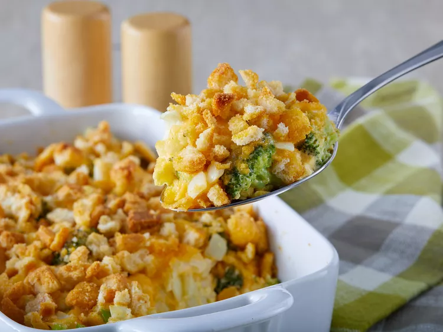

Broccoli Cauliflower Casserole

Description
This broccoli and cauliflower casserole is always a hit! The crushed croutons on top give it that crunchy
dimension that everyone loves.
Ingredients
- 2 cups broccoli
- 2 cups cauliflower
- 2 large eggs
- 1 cup shredded Cheddar cheese, divided
- ½ cup mayonnaise
- ½ cup butter, melted
- 1 (15 ounce) package seasoned croutons, crushed
Steps
- Preheat the oven to 350 degrees F (175 degrees C).
- Place broccoli and cauliflower in separate saucepans, cover with water, and bring to a boil; cook until
tender, 3 to 4 minutes. Drain and arrange in an 11x7-inch baking dish.
- Beat eggs in a bowl until creamy. Stir in 1/2 cup Cheddar cheese, mayonnaise, and onion; pour over
vegetables. Pour melted butter on top and sprinkle with remaining 1/2 cup Cheddar cheese. Scatter crushed
croutons evenly on top.
- Bake in the preheated oven until browned and bubbling, about 40 minutes.
Home